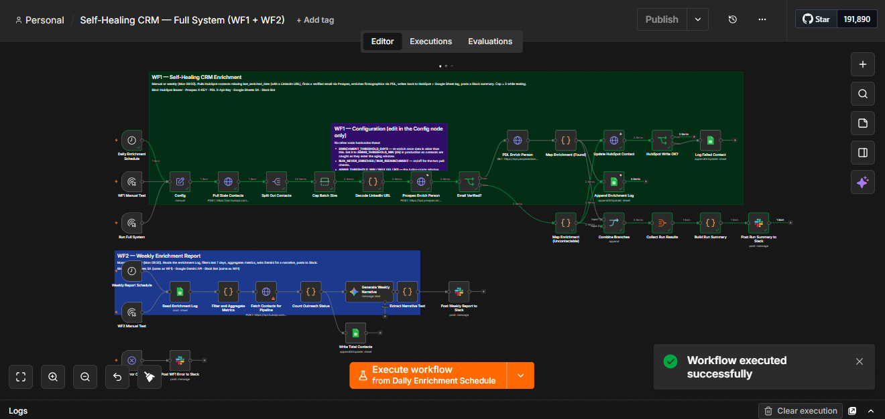
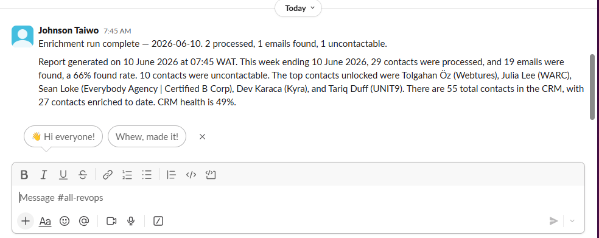
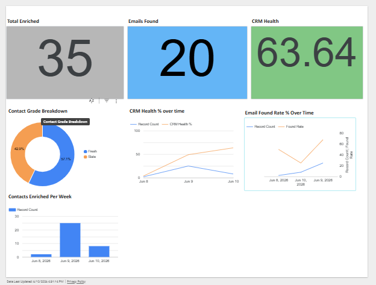

Self-Healing CRM
CRM data decays at 30% a year. The real problem isn't that it decays, it's that most teams never built the system that knows it's decaying. So I built one.
People change jobs. Titles shift. Emails go cold. And nobody notices until the bounce rate climbs and the sending domain takes the hit. The Self-Healing CRM is two n8n workflows on one canvas that keep a HubSpot database enriched, graded and reported on, with zero manual intervention after setup. Built end to end through Claude Code and the n8n MCP, and proven live on a real 55-contact list for a B2B client selling to agencies.
1. The Problem
CRM data decays at roughly 30% a year. People change jobs, titles, and companies, and a list that was clean at import is aging from day one. The damage is quiet at first: reps burn time on dead numbers, bounce rates climb, and eventually the sending domain's reputation takes the hit, so even the good emails stop landing.
The real problem isn't the decay. It's that most teams never built the system that knows it's decaying. Nobody notices until the numbers are already bad. The client here, a B2B SaaS company selling to digital agencies, had 55 contacts pulled into HubSpot from LinkedIn, names and URLs and nothing else. No emails, no firmographics, no enrichment history. The SDR was working a blind list, and no one had touched the CRM since import.
2. What I Built
Two n8n workflows on one canvas, with HubSpot as the system of record, Google Sheets as the log, and zero manual intervention after setup.
- Workflow one runs every day. It pulls every contact that has never been enriched or has crossed the age threshold (90 days), cleans the LinkedIn URL, finds a verified email via Prospeo, layers on current job title and seniority from People Data Labs, writes it all back to HubSpot, and logs every action to Google Sheets. If one contact fails, it logs it and keeps going. If the whole run breaks, Slack gets an alert naming the exact node and the exact error.
- Workflow two runs every Monday. It reads the enrichment log, pulls live pipeline data straight from HubSpot, hands the numbers to Gemini, and posts a plain-English CRM health report to Slack, contacts re-enriched, emails found, contacts ready for outreach, meetings booked, and a CRM health score.
- Everything rolls up into a live Looker Studio dashboard. CRM health over time, grade breakdown, pipeline status, fed directly from Google Sheets. The same numbers that post to Slack, live in HubSpot, and show on the dashboard are always the same numbers. No discrepancies across reporting surfaces.
Stack: n8n, HubSpot, Prospeo, People Data Labs, Google Sheets, Gemini, Slack, Looker Studio, built entirely through Claude Code and the n8n MCP, generated and debugged programmatically instead of dragged together by hand.
3. The Judgment Calls
The interesting part isn't what it does. It's the judgment calls baked into how it does it, each one derived from actually having sat on the sales side of a CRM.
- The health score only counts contacts the system can actually enrich, not every record in the CRM. Guardrails make sure the metric reflects reality, not the size of the database.
- Every contact resolves to one stable identity through a waterfall: LinkedIn URL, then email, then name and company, then HubSpot ID as the last resort. Re-enriched contacts are updated in place, never duplicated. Run it a hundred times, one row.
- When a contact re-enriches, it never touches what the SDR already built. If a meeting was booked, it stays booked. The system updates the data, it doesn't rewrite the relationship.
- When something breaks, Slack gets an alert naming the exact node and error. A broken pipeline nobody knows about is worse than no pipeline. Nothing fails silently.
- Every configurable variable lives in one node: refresh cadence, grading thresholds, which population runs. A GTM leader shouldn't need a developer to change how "stale" is defined. One number, one place.
- The only things that change as volume grows are a key swap and a batch size. Same workflow, same logic, bigger numbers.
4. Hard Problems Solved
- Only trusting verified emails. Prospeo returns an email with a status; the workflow proceeds only on
VERIFIEDand treats anything else as no email. A guessed or catch-all address is worse than none, because it's the one that bounces and burns the domain. - A LinkedIn guard that saved paid credits. Without a
linkedin_urlfilter the daily pull returned 72 rows instead of the real 55, and would have wasted paid lookups on ~17 un-enrichable junk records. Requiring the URL up front kept every credit pointed at a record that could actually resolve. - Decoding mangled URLs before the API sees them. LinkedIn URLs from the import arrived percent-encoded, sometimes double-encoded (one carried
%25c3%25a4, the letter ä encoded twice). A decode step normalises them so a lookup never silently fails on a corrupted URL. - Firmographics into custom properties, not native fields. People Data Labs' free-text values ("51-200", "marketing and advertising") fail validation against HubSpot's enum dropdowns, so they write to dedicated text properties, keeping the writes clean and the native fields untouched.
- Logging to Sheets, not HubSpot's activity log, which is API-limited on the free tier. The sheet is the system's single source of truth and the exact input the weekly report reads from, so the numbers can never drift between surfaces.
- Rebuilding around a deprecated endpoint. The original spec targeted a Prospeo endpoint that returned HTTP 400, it had been deprecated. Live-testing every dependency before building surfaced it, and the workflow was rewritten around the current
enrich-personendpoint.



Most enrichment happens once at import and never again. This system knows its own data age and repairs itself, forever, without anyone pulling a report by hand.
- RevOps engineering at production scale, two scheduled workflows, idempotent writes, and HubSpot as the system of record
- Data integrity as a discipline, verified-only emails, waterfall deduplication, update-in-place, and a health score that can't be gamed by duplicates
- Reporting that never drifts, the same numbers in Slack, HubSpot, and Looker Studio, fed from one logged source of truth
- Built with MCPs, not by hand, generated, debugged and live-tested against real APIs through Claude Code and the n8n MCP
Your CRM is decaying right now and nothing is telling you. I'd point this at your list and let it run, repairing what's aging, flagging what's unreachable, and posting a weekly health read to Slack so leadership sees data quality without anyone pulling a report. It runs on free-tier tooling to prove out, and scaling to your volume is a key swap and a batch size, not a rebuild. Same workflow, bigger numbers.